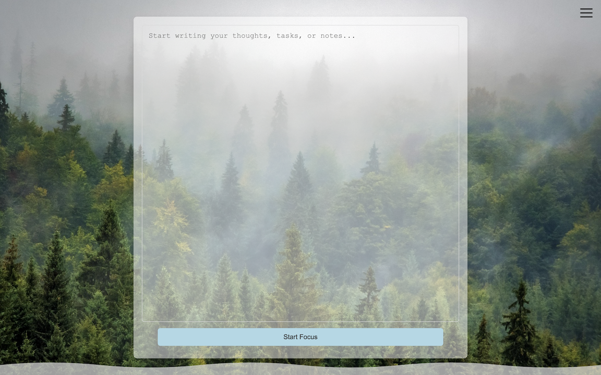

Why Tranqued?
Pomodoro Focus
Stay productive with built-in Pomodoro-style focus sessions and progress tracking.
Minimal, Beautiful Themes
Switch between calming, minimalistic themes for any mood or time of day.
Research-Backed
Built on proven productivity techniques for deep work and creative flow.
Privacy-Focused
Your data is always yours. Tranqued is open source, giving you full control and transparency.